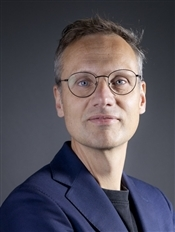
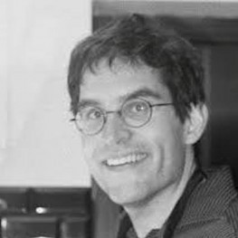

An international team of researchers from leading institutions in the US and Europe, working together to advance our understanding of the psychology of political behavior.
Researchers
The core PPBS team. These researchers guide the program's day-to-day work—from study planning and coordination to data stewardship, analysis, documentation, and the collaborations that keep the project moving.

Jasmin Hagemann
Bio
Researcher in political psychology who completed a Research Master in Psychology at the University of Amsterdam. Her work focuses on political behavior, polarization, and democratic resilience.
Sophie Hetche
Bio
Doctoral researcher in criminology studying developmental psychology, peer influences in adolescent delinquency, political-psychological foundations of legal attitudes, and virtual-reality interventions.

Lukas Wallrich
Bio
Senior Lecturer in Organisational Psychology at Birkbeck Business School, University of London. His research focuses on workforce diversity and organizational performance, and improving workplace culture.

Flavio Azevedo
Bio
Brazilian assistant professor of Interdisciplinary Social Sciences at Utrecht University. His research focuses on the political psychology of ideological attitudes and integrating open science into higher education.
Collaborators
Close research partners who have helped shape PPBS studies, methods, and publications through sustained intellectual and practical collaboration.

Andre Kaiser
Bio
Professor of Comparative Politics at University of Cologne and Director of Cologne Center for Comparative Politics.

Ben Saunders
Bio
Associate Professor at Long Island University, Brooklyn. Research interests include social identity, stereotype threat, and system justification theory.
Past Researchers
Former core-team members whose ideas, care, and hard work helped build PPBS. Although they are no longer involved in its day-to-day work, their contributions remain part of the project, and we are deeply grateful to them.

Ana Clara Ebert
Bio
Research Master's student in Social Psychology at VU Amsterdam, interested in the social and psychological mechanisms that maintain socioeconomic inequality.

Leticia Micheli
Bio
Postdoctoral fellow at the Institute of Psychology, Leibniz University Hannover, researching how inequality, scarcity and unfairness influence decision-making.
Max Wan
Bio
Data analyst and interdisciplinary researcher.

Tamara Marques
Bio
Research assistant doing a masters in Sociology at University of Minho, Portugal, interested in Black Lives Matter, race & ethnicity, and social movements.
Funders
Colleagues who have helped secure or provide funding, resources, institutional support, and partnerships that make PPBS possible and extend its data infrastructure and international reach.

Birol Akkus
Bio
Assistant Professor researching the influence of culture and cultural values on adolescent/youth development, mental wellbeing, and risk behavior.

Christopher S. Parker
Bio
Professor of Political Science at the University of Washington, author of 'Fighting for Democracy' and 'Change They Can't Believe In'.

Ekaterina Rashkova-Gerbrands
Bio
Associate Professor of Comparative Politics at the School of Governance at Utrecht University. Co-Director of the PPE College Utrecht. Research focuses on comparative politics and policy.
Felipe Vilanova
Bio
Social/political psychologist researching right-wing authoritarianism, corruption, ideology, and political attitudes. ISPP Governing Council member (2025-2028).

Gabriel Gaudencio
Bio
Clinical psychologist and neuroscientist specializing in moral decision-making, brain stimulation, and social neuroscience.

Gaëlle Marinthe
Bio
Associate Professor specializing in identity processes, collective action, and intergroup relations. Research on collective narcissism and political extremism.

Gijs Schumacher
Bio
Professor of Political Psychology researching how emotions influence democracy and political decision-making. Co-director of the Hot Politics Lab at UvA.

Han van der Maas
Bio
Professor of Psychological Methods specializing in formalization and testing of psychological theories in cognition, attitudes, and intelligence. ERC grant recipient.

Iris Smal
Bio
PhD candidate researching how opinions and attitudes form and change using complex systems models. Also Open Science Community Manager for OSCA.

Joe Vitriol
Bio
Assistant Professor at Lehigh University, College of Business. Studies causes, consequences, and solutions to bias in judgment and behavior in political, legal, and organizational settings.

Joshua Tybur
Bio
Associate Professor in Experimental and Applied Psychology at VU Amsterdam, studying fundamental problems of life including disease avoidance, mating, and interdependence.
Manos Tsakiris
Bio
Professor in the Department of Psychology at Royal Holloway and Director of the Centre for the Politics of Feelings at the School of Advanced Study, University of London.

Marcel Lubbers
Bio
Professor and Head of Interdisciplinary Social Science at Utrecht University, studying societal cohesion, immigration, nationalism, Euroscepticism, and voting behavior.

Meta van der Linden
Bio
Assistant Professor researching social psychology of immigration and refugee integration, examining inclusion/exclusion of migrants through an interdisciplinary lens.

Nick Carnes
Bio
Professor at the Sanford School of Public Policy at Duke University with appointments in Political Science and Sociology. Research focuses on American politics, economic and social class inequality, and political representation.

Olivier Klein
Bio
Professor of Social Psychology and co-director of the Centre for Social and Cultural Psychology, researching collective memory, misinformation, intergroup relations, stereotyping, and open science.

Patrick Forscher
Bio
Post-doc researcher at the Co-Regulation (CORE) Lab focusing on meta-science and social disparities.
Quinnehtukqut McLamore
Bio
Assistant Professor in Psychological Sciences studying conflict narratives, group identities, conspiracy theories, and dehumanization.

Robert Ross
Bio
Research Fellow researching psychology of belief — religious belief, delusional belief, and misinformation. Combines meta-science with cognitive psychology.

Roosevelt Vilar
Bio
Researcher focused on human values, political behavior, political participation, and cross-cultural psychology. PhD from Massey University (NZ).

Tobias H. Stark
Bio
Associate Professor specializing in ethnic prejudice, national identities, and interethnic relations. ERC Consolidator Grant recipient (€2M).

Tobias Rothmund
Bio
Professor at the Institute for Communication Science at Friedrich Schiller University, investigating psychological processes in media-mediated communication.

Tom Nijs
Bio
Postdoctoral researcher with the Governance and Pluralism team at the Erasmus School of Social and Behavioural Sciences. Research focuses on political behavior and governance.

Verena Seibel
Bio
Assistant Professor with tenure researching migration and social integration, examining how migrants access welfare services. ERC Starting Grant recipient (2025).
Mentors
Senior colleagues who offer guidance, methodological advice, and career support—especially to early-career researchers developing projects with PPBS data.